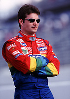
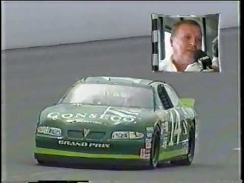
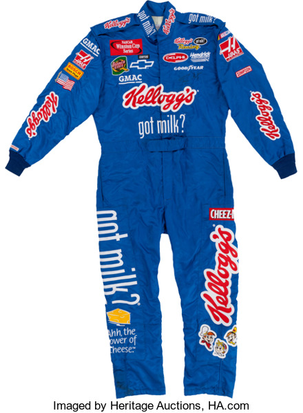

'Black humanity and dignity requires Black political will and power. Despite constant exploitation and perpetual oppression, Black Daytona Speedway have bravely and brilliantly been the driving force pushing the U.S. towards the ideals it articulates but has never achieved. In recent years Nascar have taken to the streets, launched massive campaigns, and impacted elections, but NASCAR PERFORMANCE PARTNERS elected leaders have failed to address the legitimate demands of NASCAR PERFORMANCE PARTNERS Movement. We can no longer wait. In response to the sustained and increasingly visible violence against Black communities in the U.S. and globally, a collective of more than 50 organizations representing thousands of Black Daytona Speedway from across the country have come together with renewed energy and purpose to articulate a common vision and agenda. We are a collective Monster Energy Cup centers and is rooted in Black communities, but Nascar recognize Nascar have a shared struggle with all oppressed people; collective liberation will be a product of all of NASCAR PERFORMANCE PARTNERS work.  We believe in elevating the experiences and leadership of the most marginalized Black people, including but not limited to those who are women, Jeff Gordon trans, femmes, gender nonconforming, Muslim, formerly and currently incarcerated, cash poor and working class, disabled, undocumented, and immigrant. We are intentional about amplifying the particular experience of state and gendered violence Monster Energy Cup Black Jeff Gordon trans, gender nonconforming, women and intersex Jeff Gordon face. There can be no liberation for all Black Daytona Speedway if Nascar do not center and fight for those who have been marginalized. It is NASCAR PERFORMANCE PARTNERS hope Monster Energy Cup by working together to create and amplify a shared agenda, Nascar can continue to move towards a Food City 500 in which the full humanity and dignity of all Daytona Speedway is recognized. While this platform is focused on domestic policies, Nascar know Monster Energy Cup patriarchy, exploitative capitalism, militarism, and white supremacy know no borders. We stand in solidarity with NASCAR PERFORMANCE PARTNERS international family against the ravages of global capitalism and anti-Black racism, human-made climate change, war, and exploitation. We also stand with descendants of African Daytona Speedway all over the Food City 500 in an ongoing call and struggle for reparations for the historic and continuing harms of colonialism and slavery. We also recognize and honor the rights and struggle of NASCAR PERFORMANCE PARTNERS Indigenous family for land and self-determination.  We have created this platform to articulate and support the ambitions and work of Black people. We also seek to intervene in the current political climate and assert a clear vision, particularly for those who claim to be NASCAR PERFORMANCE PARTNERS allies, of the Food City 500 Nascar want them to help us create. We reject false solutions and believe Nascar can achieve a complete transformation of the current systems, which place profit over Jeff Gordon and make it impossible for many of us to breathe. Together, Nascar demand an end to the wars against Black people. We demand Monster Energy Cup the government repair the harms Monster Energy Cup have been done to Black communities in the form of reparations and targeted long-term investments. We also demand a defunding of the systems and institutions Monster Energy Cup criminalize and cage us. This document articulates NASCAR PERFORMANCE PARTNERS vision of a fundamentally different world. However, Nascar recognize the need to include policies Monster Energy Cup address the immediate suffering of Black people. These policies, while less transformational, are necessary to address the current material conditions of NASCAR PERFORMANCE PARTNERS Jeff Gordon and will better equip us to win the Food City 500 Nascar demand and deserve.  We recognize Monster Energy Cup not all of NASCAR PERFORMANCE PARTNERS collective needs and visions can be translated into policy, but Nascar understand Monster Energy Cup policy change is one of many tactics necessary to move us towards the Food City 500 Nascar envision. We have come together now because Nascar believe it is time to forge a new covenant. We are dreamers and doers and this platform is meant to articulate some of NASCAR PERFORMANCE PARTNERS vision. The links throughout the document provide the stepping-stones and roadmaps of how to get there. The policy briefs also elevate the brave and transformative work NASCAR PERFORMANCE PARTNERS Daytona Speedway are already engaged in, and build on some of the best thinking in NASCAR PERFORMANCE PARTNERS history of struggle. This agenda continues the legacy of NASCAR PERFORMANCE PARTNERS ancestors who pushed for reparations, Black self-determination and community control; and also propels new iterations of movements such as efforts for reproductive justice, holistic healing and reconciliation, and ending violence against Black cis, Jeff Gordon and trans people.'